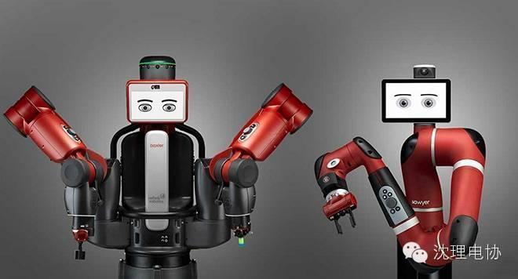

机器人明年将参加高考
点击上方蓝字“沈理电协"关注我们！
诞生仅两年，目标一本
2017年的文科高考生，即将迎来一位特殊的竞争对手——高考机器人。该款机器人包括三个独立的人工智能程序，分别应考数学、语文和文综。研发团队立下目标，将在全封闭环境中、有监考老师和公证员的情况下，让它和全国文科高考生同时考试、同时交卷，并力争考上一本。
华西都市报记者获悉，“高考机器人”已被列入国家科技部863计划(又称“超脑计划”)的首要任务。让人惊喜的是，主攻数学科目的研发团队中，组长单位由成都本土的一家人工智能开发公司担任。该款“成都造”高考机器人，还将亮相国家科技部、发改委、财政部、军委装备发展部联合举办的科技创新成就展。
5月4日，主攻数学科目人工智能程序的研发负责人接受华西都市报记者采访，揭秘了该款机器人的研发和备考情况。享受单间待遇
监考老师和公证员齐见证
“这款让人期待的机器人还没有昵称，目前对外的称呼是高考机器人。”5月4日下午，成都高新区天府新谷5号楼，一场关于人工智能的讲座刚结束，来自高校、企业的听众就把一个个问题抛向了主讲人——清华大学苏研院大数据中心主任林辉，他同时也是成都一家人工智能研发公司的CEO。
林辉介绍，高考机器人将在2017年参加全国文科高考。届时，它将拥有完全封闭的环境即“单人间”，并在监考老师及公证员的全程监督下，和全国的文科考生一样，在规定的时间内进行语文、数学和文综考试。
这款机器人怎么应考呢？林辉透露，每门考试开始前，专人将高考机器人，即安装了人工智能程序的服务器与打印机连接。开考的铃声一响，专人即将考卷的电子版输入人工智能程序，此时的机器人完全与外网切断联系，仅通过自身的人工智能程序进行读题、解答和答案输入，答完题的考卷再通过打印机输出，整个答题过程结束。
2017年文科高考生不必担心的是，高考机器人的成绩并不进入全国高考分数排名，这也意味着它即使考出了满分，也不会影响当年的分数排名和重点线划分。虽然如此，国家科技部立项时已明确目标，2017年高考机器人首次应考将力争一举考上一本。冲击高考一本
从诞生到应考仅2年时间
虽然我国首款高考机器人设定了考上重本的目标，但它从项目诞生到真正参考，其实仅有2年的时间。
林辉透露，他所属的公司因为在人工智能领域起步早，攻克了人工智能的识别、大数据处理等难关，在2015年国家科技部立项时，一举中标了高考机器人的数学应考项目，成为了数学组别的组长单位。这意味着，到2017年应考时，该款高考机器人仅有2年的研发时间，就需要完全具备一个18岁高考文科生的数学理解、逻辑思维和计算能力。
不仅仅是数学关，“超脑计划”的高考机器人项目，还包括另外两个独立的人工智能程序，分别主攻语文和文综。对比来看，数学是其中相对技术成熟的，语文和文综涉及到的主观题部分，对人工智能来说存在一定挑战，尤其是情绪、情感以及意识形态，对高考机器人都极有难度。
不少人好奇，数学的考试题目倒是有确定的答案，而语文的主观题尤其是作文，高考机器人怎么应对呢？对此，林辉给出解答，其实现在国内外的“机器人写作”技术都日渐成熟，在美国硅谷就有一个“经济新闻的自我报道”项目，先给机器人几个信息关键词，它会按照经典的经济新闻模式进行整合报道，让人完全看不出来是机器人写的。
同样道理，由于语文作文的得分点中，立意新颖、有深度仅占几分，机器人读题后，分析关键词再进行写作，并不会影响文章的谋篇布局以及内容，仅仅是情感和情绪有所欠缺，不会导致大的扣分项。

高考机器人是人工智能水平的试金石
目前，高考机器人的备战情况如何呢？华西都市报记者对话了数学组别的研发负责人符红光，他也是电子科技大学计算机学院的教授和博士生导师。符红光说，刚刚过去的五一，备战数学的高考机器人一刻也没休息，使劲儿进行答题练习和自学。依靠自身的人工智能程序，解答北京市往届高考试卷拿到了115分的成绩。
符红光说，高考机器人其实是人工智能水平的试金石，技术关键在语言理解和知识推理。高考机器人需要通过推理建立知识库，而不是市面上常见的学习机储存的题库。举个例子，当解答鸡兔同笼的试题时，高考机器人不仅需要读题、理解，也需要掌握知识之外的常识，即鸡和兔分别有几条腿。
对于高考机器人要考上一本，符红光很有信心。根据“超脑计划”，我国的高考机器人将计划在2020年考上北大、清华，而日本也提出在2020年，高考机器人考上东京大学。
一看就不是正经机器人，连高考都要参加！
编/高天